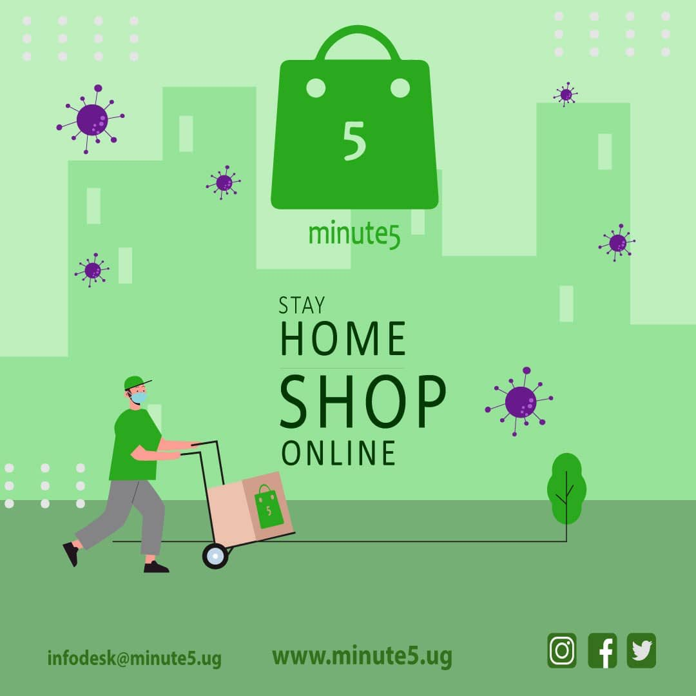

MESSAGE FROM THE CEO

Katumba Jonathan Paul
infodesk@minute5.ug
- THE 1ST MINUTE5 BUSINESS ANNUAL UPDATE
-
Warm greeting to everyone,
My name is Katumba Jonathan Paul, co-founder and CEO at Minute5 which is a grocery delivery service. As of today, the 7th of April 2020, Minute5 is 425 days old (1 years and two months old) and for a company this young, we have a lot to share as part of our journey of Bringing the Market to You, the grocery consumers and the businesses. This is the inaugural business and status update of Minute5 which will vividly and fully give our customers, business partners, concerned citizens, industry players and major government bodies full insights and information about the corporation and performance of the ecommerce market that we have been able to tap in.We have been able to deliver over 1000 orders
Having started business operations in December 2018 and fully registering the company in April 2019, we have been able to deliver over 1000 orders to customers to date with over 8000 products delivered. We have been able to support and work with 25 vendors and food kiosks owners and successfully gotten into partnerships with 2 digital marketplaces (online platforms that would love to offer grocery delivery services to their customers). With our current capacity, that only increased because of the pandemic, we are now able to serve a good number of customers a day.
This simply means as a young company, we still have a lot to do to reach our goals; considering these numbers against our predictions where we see ourselves making 350,000 deliveries by April 2022 and employing at least 1000 Ugandans directly and supporting 1 million Ugandan indirectly.
However, to take you back a bit, this whole business started as a project that we didn’t actually and anticipate to see going this far. My fellow co-founders and I simply wanted to do something productive with our vacation after we had completed our secondary school education. (Which reminds me, the average age of the founding team is just 22 years😂) However, because of a really good opportunity that came our way, we then realised that there is a gap in the grocery delivery and consumption market in Uganda, specifically in Kampala and this opportunity came in form of a Start-up accelerator program that was organised by MTN Uganda together with the Innovation Village that pushed us for about three months and introduced us to how best we could be able to turn this pain into joy for consumers who can’t access the food markets for reasons including but not limited to busy work schedules, limited access to food markets because of distance or like for instance, the quarantine and the lockdowns.
For every 10,000 families, $7.9 million is spent shopping
Some consumers also fail to get fresh groceries from their markets which frustrates them. It’s a really huge domestic market because for every 10,000 households, about $7.9 million is spent annually and that’s just for a mere 10,000 households. A huge chunk of the households have the head working a 9 to 5 job and have to commute to the suburbs where there is a concentrated settlement pattern. And with so much traffic, its frustrating to add the hustle of going to the market to shop for groceries, groceries that might not even be fresh. And annually, a person who goes physically to the market loses about 45 days in shopping, this is more than a month, a month that would possibly be well spent if there was another option of getting groceries without losing such time.
This is where the whole grocery delivery idea came to life, on completion of the MTN Uganda Start-up accelerator program, we started implementing what we had acquired in the program. However, it wasn’t enough. We had to also get into another program which was the NTF IV Uganda project which gave us a great deal of trainings in preparing ourselves for business and understanding our customers better. Around that time, August 2019, we had only successfully delivered shy 100 orders. It was really terrible, having invested all that time for such low numbers simply dispirited all of us. This was the point where so many people who had joined our team decided to leave because it looked like the end of the road for us. We were burning so much cash during that period in pursuit to get more customers and all this was in vain.
One thing that got me going was the motivation I got from John Ndabarasa, the Startup Engagement associate at the NTF IV Uganda project. Our founders vision developed over time which meant more than the status of the business. Its really important to know where you want to go such that it’s the pull force that gets you moving.
Fast forward to November 2019, we got a pretty huge investment deal of about $500,000 but because we weren’t investment ready and we weren’t sure which business model would work for us, we lost contact with the firm that had picked interest in us. We had a major set back as we thought we were going to get a boost for the business. However, shortly after this, we as the founding team sat and discussed what was to be the fate of the company and eventually, we agreed on a new model that was more efficient, more profitable and easily scalable and as I write this today, we are bringing our services closer to our customers in the hotspots(residence areas where we see so many orders being made from) before the end of the month of June.
January 2020 began on a rather more fruitful note, our GMV increased tremendously till around late February 2020 when we had a dry spell for about three weeks. However, as the Corona virus pandemic became serious, the number of orders increased greatly. We have processed four times more orders in April and May than the rest of the time we have been operating. This period has accelerated most of the plans we had to implement this year because now more than ever, our services are needed.
As part of our promise, we shall keep Bringing the Market to You, whatever it takes whatever the price is, our team now that is now fully motivated and will extremely work hard to make sure consumers enjoy easy shopping for groceries. We also hope to see more partnerships this year as we try to scale our service to get closer to the people we care about most.
Published on 7th June, 2020.
